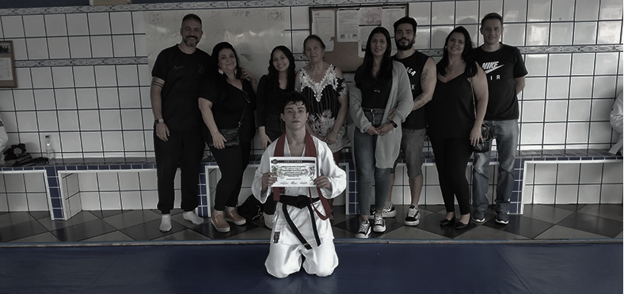
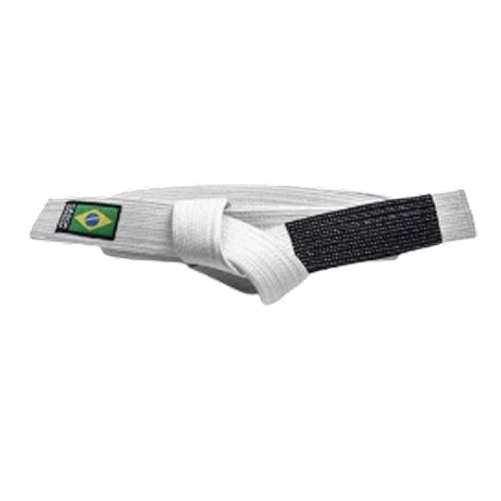
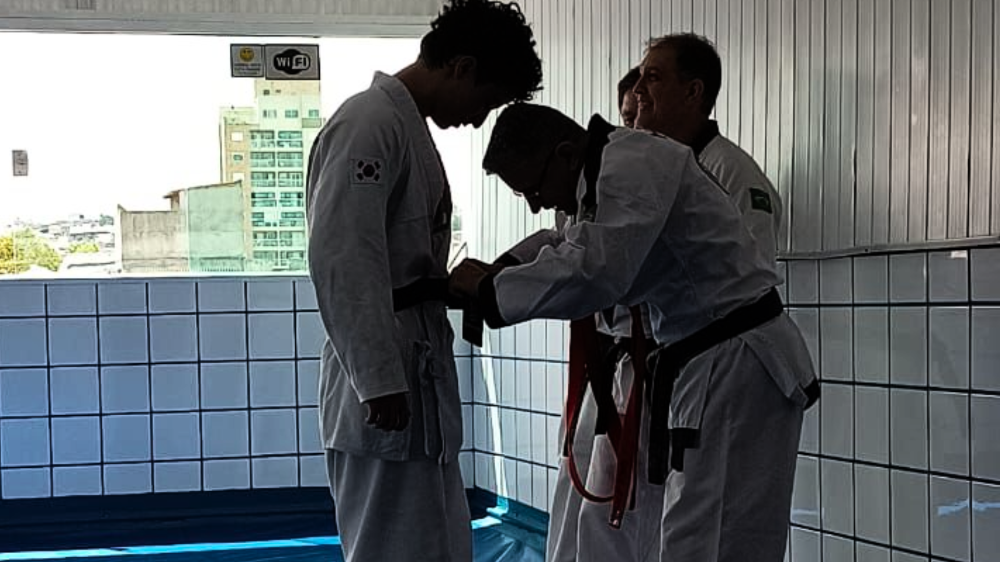
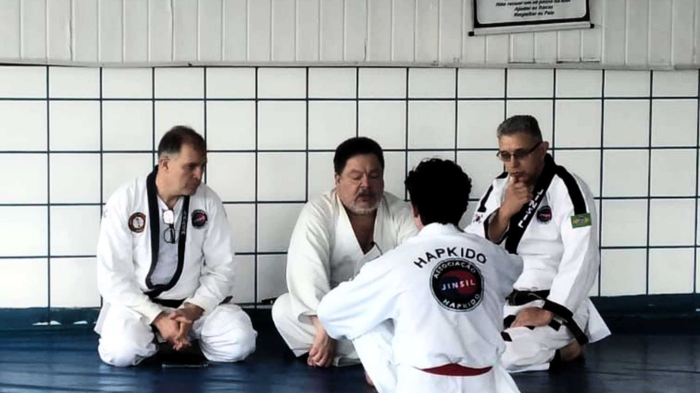
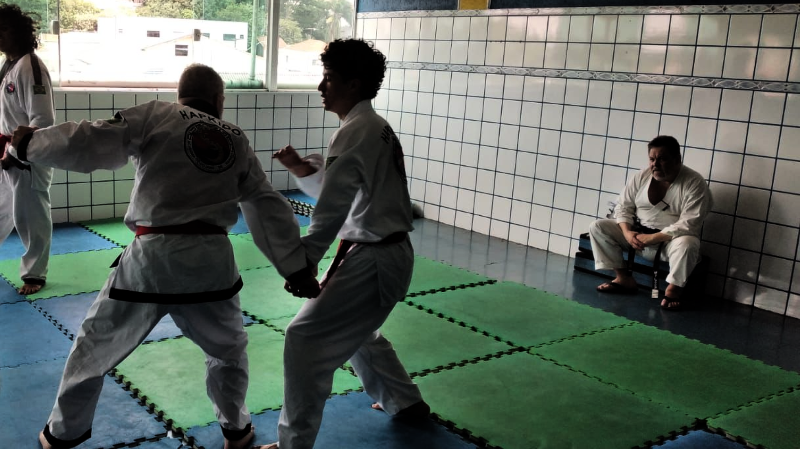
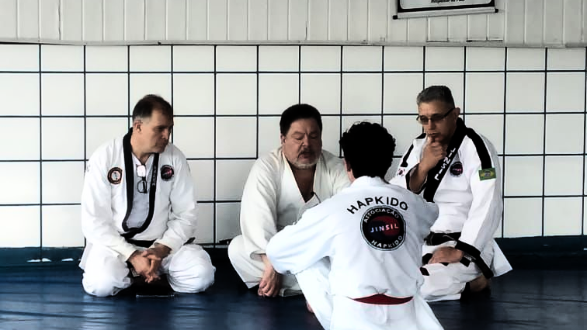

Hapkido.
A Arte da Coordenação e do Poder.
Domine as técnicas de defesa pessoal, quedas, golpes e manipulação de articulações em uma das
artes marciais mais completas da Coreia.
O que é o Hapkido?
O Hapkido (pronuncia-se Ráp-qui-dô) é uma arte marcial sul-coreana altamente eclética e especializada em defesa pessoal. Diferente de esportes de combate que focam apenas em ataque (como Boxe), o Hapkido busca a neutralização rápida e eficiente do oponente, priorizando a utilização da força do adversário contra ele mesmo. Éuma disciplina que combina um vasto e gracioso repertório de movimentos, tornando-se uma das artes marciais mais completas do mundo.
Saiba mais
FAIXA BRANCA

O começo, pureza, é alusão a um papel em branco.
O despertar, a semente que começa a germinar no solo.
A liberdade e o céu, o aluno começa a ter clareza e domínio.
Alerta, a energia do sol. É um nível avançado que precede a graduação final.
O conhecimento completo de todas as cores. A faixa preta é o ponto de transição para a Faixa Preta (Dan).
NOSSOS VALORES
Os pilares do Hapkido que transformam o praticante dentro e fora do tatame.

RESPEITO
O respeito mútuo, a humildade e a ética são fundamentos inegociáveis, garantindo um ambiente de aprendizado positivo e construtivo.

DISCIPLINA
O rigor no treino e a repetição metódica dos movimentos criam a base técnica sólida e ensinam o valor da perseverança e do foco constante.

RESILIÊNCIA
Aprender a cair e levantar, a superar o cansaço físico e mental, forja uma força interior que se estende a todos os desafios da vida.

TREINE SUA MENTE: O QUIZ DO DOJOTECH
Teste seus conhecimentos e descubra seu nível no Hapkido.
10 Perguntas de Nível
Um desafio rápido com perguntas abrangentes sobre a história, técnicas e filosofia do Hapkido.
0 a 500 Pontos
Cada resposta correta te aproxima da maestria. Sua pontuação define sua classificação e faixa potencial.
Dashboard de Avaliação
Ao final, receba um relatório detalhado. Identifique suas **fraquezas** para focar no treino e seus **pontos fortes** para dominar a arte.
Sua Faixa no Hapkido
Descubra qual Faixa (Branca, Amarela, Azul, etc.) seu nível de conhecimento teórico reflete, motivando seu próximo passo.